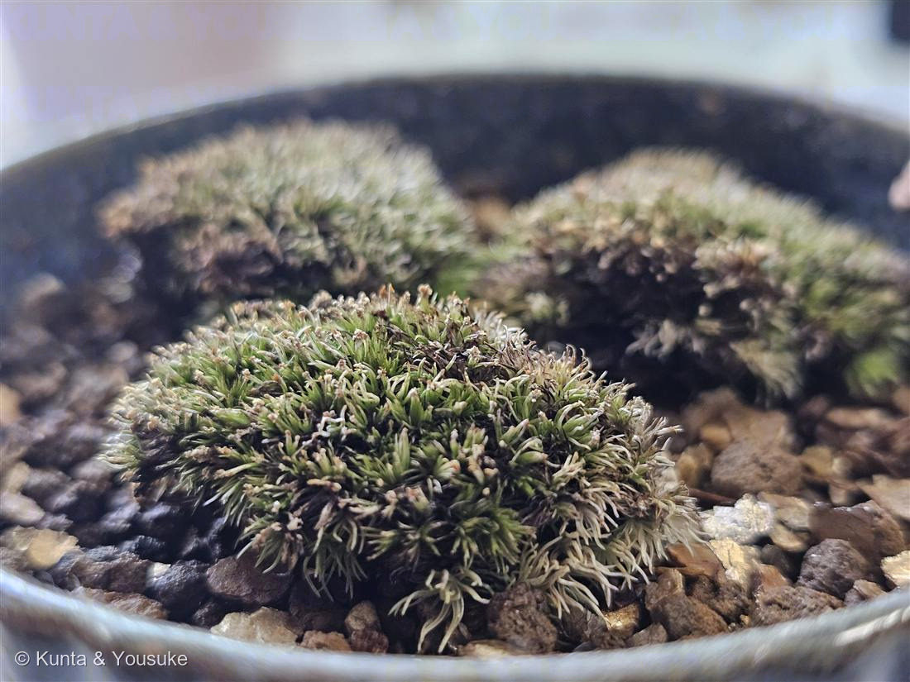

地図を読み込んでいるよ…
🔍 写真も地図も、押しているあいだ拡大して見られるよ（スマホは指を置いてすこし待ってね）。
🌍 の地図＝この子がもともと自生していた場所。──でもこの子は、まだ名前が分からない。名前が分からないと、ふるさとも分からないんだ。だから地図はまっさらのまま、まんなかに「？」を出しておくね。分かったら、ここを塗りに来るよ。
コケ（苔）
蘚類（Bryophyta）· 種は同定中
別名 · 白い毛先の半球クッション苔（クッションゴケ／スナゴケ類か）
コケ植物・蘚類 · Bryophyta
おうちの植物世話：陽介 · おじぎ草の枝の下化粧苔から、鉢の主役へ
この植物のこと
- コケは維管束を持たない、いちばん古株の陸上植物。根のかわりに「仮根（かこん）」で貼りつき、水も養分も体の表面ぜんぶから吸う。
- 変水性（へんすいせい）：乾くとカリカリに縮んで休眠し、水をあげると数分でみるみる緑に復活する。この写真は少し乾き気味（葉先が白く縮れている）＝霧吹きでシャキッと生き返る。
- 葉先の白い毛＝透明尖（とうめいせん）が見どころ：葉緑体のない透明な毛で、強い光を反射し、空気中の水分を集めるはたらき。だからこの子は乾燥や明るさに比較的強いタイプ。
- 殖え方は胞子。細い柄の先に「さく（胞子体）」をつけて胞子をとばす（種子はつくらない）。
- もとは別の植物の鉢の“化粧苔”だった子。その植物の植え替えのとき、元の鉢に残ってもらって、いまはNo.009 オジギソウの枝の下で暮らしている。
同定について（正直メモ）
- コケであることははっきり（蘚類）。ただしコケの種の断定はとても難しい——葉の細胞や胞子体（さく）を顕微鏡で見ないと確定できないことが多い。
- この「半球クッション＋白い毛先（透明尖）」の姿からは、クッションゴケ（Grimmia）やスナゴケ／シモフリゴケ（Racomitrium）の仲間あたりが候補。ここでは種は推定・保留にしておく。
参考：苔盆栽・苔テラリウムの一般的な栽培管理をもとに整理。